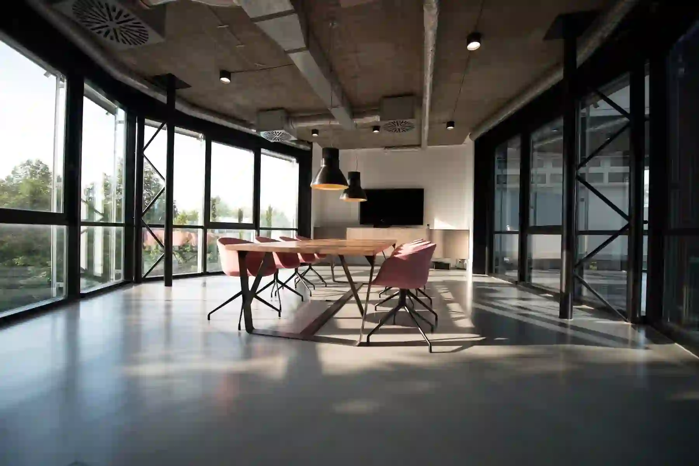
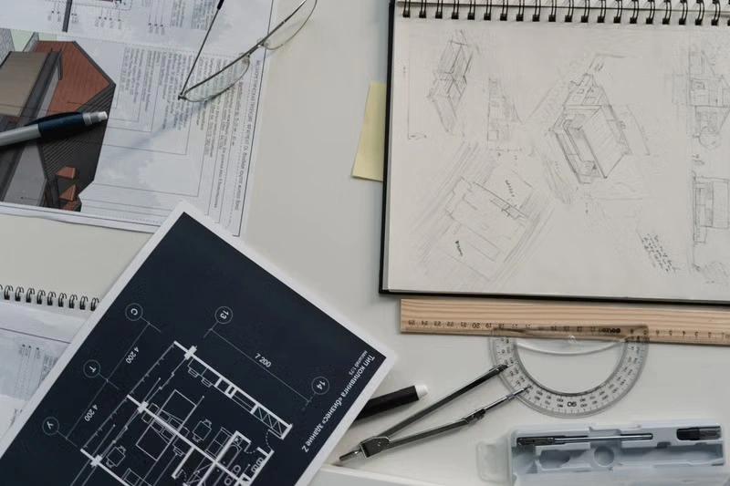
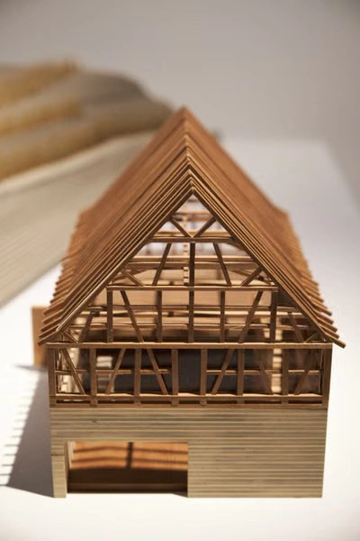
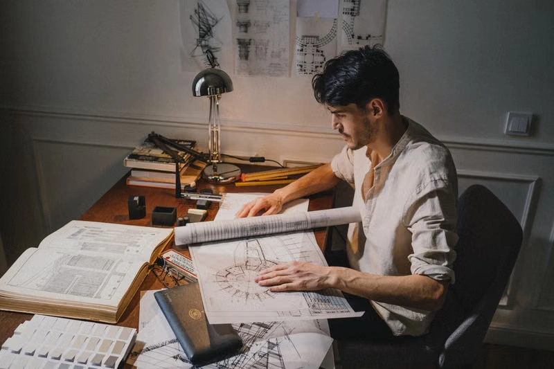
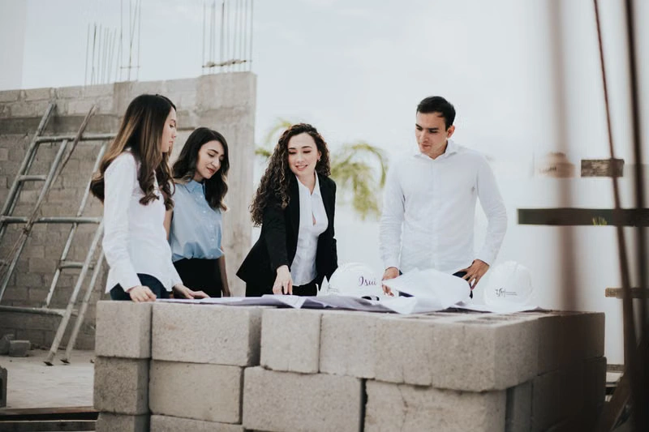
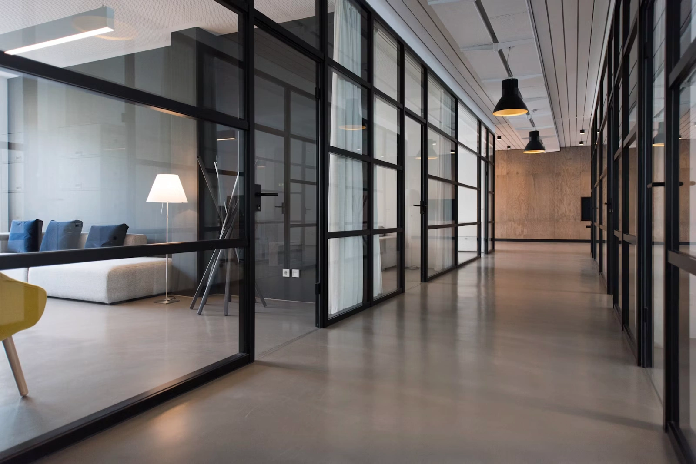
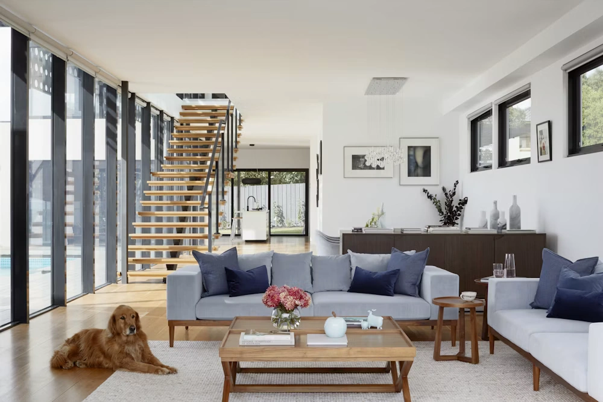

01 / STRUCTURE
Concrete
Mass, permanence and the quiet geometry of structure.


Home / Studio
ST / 03A practice of architects, model-makers and craftspeople working from a converted warehouse in the Dock District. We draw first, build carefully, and believe architecture should become quieter with time.
Manifesto
Every project starts with a pencil section. Software proves what the hand has already proposed.
We read the land before we read the brief. A building that ignores its ground will be ignored by time.
We take fewer commissions so each can be lived with. Architecture is not a throughput business.
Concrete, oak, lime plaster — left honest. We rarely specify a covering that hides what lies beneath.
A wall should outlive its architect. We detail for repair, not for novelty.
 Stackly / 01
Stackly / 01
How we think
We believe the strongest spaces are discovered through patience, observation and reduction. Before the first render, there is a conversation. Before the conversation, there is a site.
Read the ground.
Understand the light.
Choose fewer materials.
Draw until it feels inevitable.
The Workshop

Long oak tables, north light, and a wall of pinned sections. No screens before lunch — mornings are for hand drawing.

Basswood, foam, and a laser cutter we use sparingly. Every project is built at 1:50 before it is built at 1:1.

Three thousand books, a hundred monographs, and the complete Aalto folios. Reference is a daily habit, not a decoration.

A resident architect on every live project. We do not hand drawings to a contractor and disappear.
Inside the practice

Work happens together, around the same table.
38
people in one practice
Architects work alongside model-makers, interior designers, researchers and craftspeople from the earliest sketch to the final detail.
Material intelligence
Mass, permanence and the quiet geometry of structure.
Natural grain, touch and the warmth of things made by hand.

Material with memory, chosen to belong to its landscape.
A day in the studio
The studio begins quietly. Sections, plans and coffee.
Projects are pinned to the wall and questioned together.
Models move from drawing board to workshop table.
Calls with site teams, material samples and details.
The Practice

Trained at the AA and the Royal Academy. Iris leads cultural commissions and the model shop.

Twenty years in housing, from social blocks to single-family homes. Theo runs the residential studio.

Joinery, lighting, and the last inch of every project. Sana leads our interiors and furniture team.

Adaptive reuse and workplace. Felix oversees our commercial and public-realm commissions.
Since 2008
Stackly founded by Iris Calloway in a rented Dock District loft.
First RIBA award for the Quarry Visitor Centre.
Theo Marchetti joins as partner; residential studio opens.
Move to the current warehouse — the model shop is built.
Practice grows to 38 people; commercial studio launched.
RIBA National Award for the Oculus Pavilion.
Join the studio
We hire slowly, from junior to senior. If you draw, build models, and care about material, send us your work — even when no role is posted.
Send a portfolio →